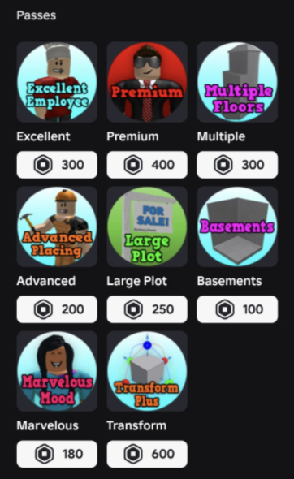

Game Passes

Excellent Employee - 300 Robux. This game pass increases the amount of money you earn from working and makes you get promoted faster.
Premium - 400 Robux. Provides several benefits such as 50% cheaper bills, double daily rewards, a special name tag, a Premium trophy, and the ability to choose your plot location.
Multiple Floors - 300 Robux. Allows you to build up to five floors on your plot, giving you more space for larger houses and multi-story buildings.
Advanced Placement - 200 Robux. Lets you decrease the stud distance for movement and rotation so you can move objects more freely, overlap items that normally cannot be placed together, and access basic shapes and structural items.
Large Plot - 250 Robux. Expands your building area from 30×30 to 50×50, allowing you more space to build.
Basements - 100 Robux. Unlocks the ability to build underground rooms and additional spaces beneath your house.
Marvelous Mood - 180 Robux. Makes your character's moods decrease more slowly and increase more effectively. It also allows you to turn off certain negative mood effects and animations.
Transform Plus - 600 Robux. Allows you to use the Transform Tool without building restrictions and gives you access to basic shapes and structural items.